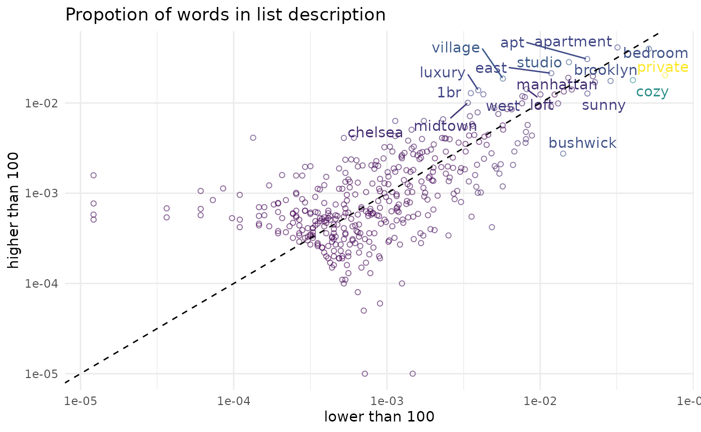
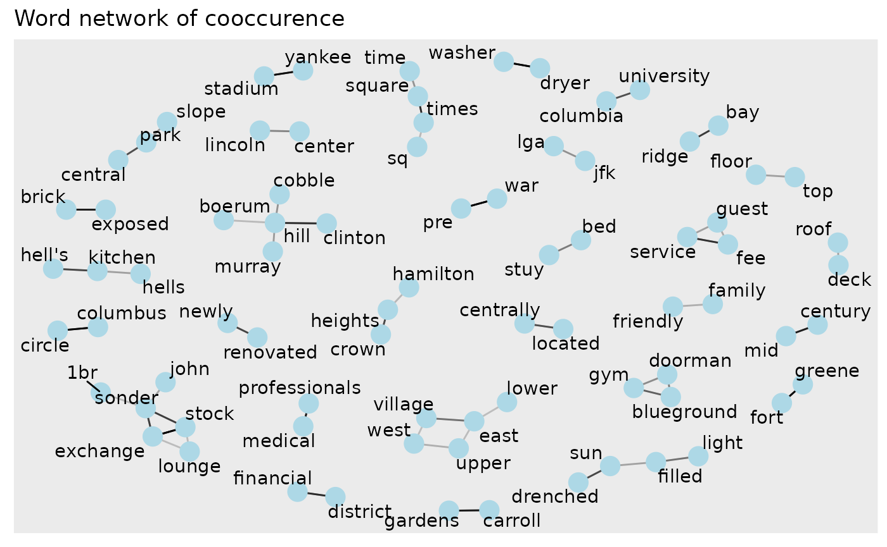

## Loading required package: tidymodels## Registered S3 method overwritten by 'tune':
## method from
## required_pkgs.model_spec parsnip## ── Attaching packages ────────────────────────────────────── tidymodels 0.1.4 ──## ✔ broom 0.7.10 ✔ recipes 0.1.17
## ✔ dials 0.0.10 ✔ rsample 0.1.1
## ✔ dplyr 1.0.7 ✔ tibble 3.1.6
## ✔ ggplot2 3.3.5 ✔ tidyr 1.1.4
## ✔ infer 1.0.0 ✔ tune 0.1.6
## ✔ modeldata 0.1.1 ✔ workflows 0.2.4
## ✔ parsnip 0.1.7 ✔ workflowsets 0.1.0
## ✔ purrr 0.3.4 ✔ yardstick 0.0.9## ── Conflicts ───────────────────────────────────────── tidymodels_conflicts() ──
## ✖ purrr::discard() masks scales::discard()
## ✖ dplyr::filter() masks stats::filter()
## ✖ dplyr::lag() masks stats::lag()
## ✖ recipes::step() masks stats::step()
## • Use tidymodels_prefer() to resolve common conflicts.## Loading required package: widyr##
## Attaching package: 'tidygraph'## The following object is masked from 'package:stats':
##
## filter
words <- listings %>%
transmute(
list_id,
lon,
lat,
list_description = stringr::str_to_lower(list_description),
price
) %>%
unnest_tokens(word, list_description) %>%
filter(!stringr::str_detect(word, "^[\\d[:punct:]]+$")) %>%
anti_join(stop_words) %>%
group_by(word) %>%
filter(n() > 50) %>%
ungroup()## Joining, by = "word"## # A tibble: 408 × 1
## word
## <chr>
## 1 clean
## 2 quiet
## 3 apt
## 4 home
## 5 park
## 6 midtown
## 7 village
## 8 harlem
## 9 york
## 10 cozy
## # … with 398 more rows
prop_by_price <- words %>%
mutate(
price = if_else(price <= 100, "lower than 100", "higher than 100")
) %>%
group_by(price, word) %>%
count() %>%
group_by(price) %>%
mutate(prop = n / sum(n)) %>%
ungroup() %>%
pivot_wider(id_cols = word, names_from = price, values_from = prop) %>%
mutate(diff = `higher than 100` - `lower than 100`)
prop_by_price %>%
ggplot(aes(`lower than 100`, `higher than 100`, color = abs(diff))) +
geom_jitter(shape = 21, alpha = 0.6) +
ggrepel::geom_text_repel(aes(label = word),
data = . %>% filter(abs(diff) >= 0.005)) +
scale_x_log10() +
scale_y_log10() +
scale_color_viridis_c(breaks = scales::breaks_log(), guide = "none") +
geom_abline(slope = 1, intercept = 0, linetype= "dashed") +
theme_minimal() +
theme(panel.grid.minor.y = element_blank()) +
labs(
title = "Propotion of words in list description"
)## Warning: Removed 3 rows containing missing values (geom_point).
words %>%
pairwise_cor(word, list_id) %>%
filter(correlation >= 0.3) %>%
as_tbl_graph() %>%
ggraph(layout = "fr") +
geom_edge_link(aes(edge_alpha = correlation), show.legend = FALSE) +
geom_node_point(color = "lightblue", size = 5) +
geom_node_text(aes(label = name), repel = TRUE) +
labs(title = "Word network of cooccurence")